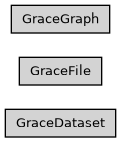

grace
Full name: ase2sprkkr.result_files.grace
Module class hierarchy

Description
Read Grace/XMGrace .agr projects without a plotting dependency.
The parser preserves graph/set identity, numeric data, common captions and layout parameters, and the original configuration commands. Grace’s text markup is deliberately kept intact; it is not Matplotlib/TeX markup.
Functions
|
Retain simple Grace attributes; full directives are also preserved. |
|
Remove Grace's outer quotes, preserving its formatting escapes. |
|
Read a Grace project from a path or an open text stream. |
Classes
|
One Grace set (e.g. G1.S0), with data in file order. |
|
Parsed Grace file; no matplotlib import or dependency. |
|
A Grace graph, containing numbered datasets and plot metadata. |
Exceptions
Malformed or unsupported content in a Grace project. |